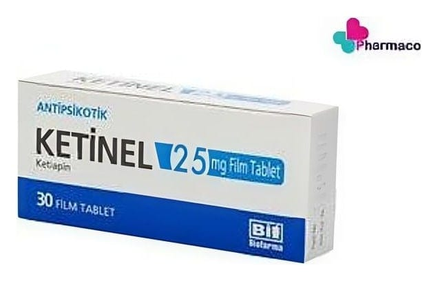

Ketinel 25 mg Film Tablet, 30 Adet

Ne için kullanılır
KT · Bölüm 1KETİNEL” şeftali renkli, yuvarlak, bikonveks film kaplı tabletlerdir. KETİNEL” 25 mg, 30 ve 60 tabletlik ambalajlarda sunulmaktadır. 1/13
KETİNEL” etkin maddesi ketiapin olan, antipsikotikler (psikiyatrik hastalıklarının tedavisinde kullanılan ilaçlar) olarak adlandırılan ilaç grubuna ait bir ilaçtır. Bu grup ilaçlar aşağıdaki gibi belirli psikiyatrik hastalıkların tedavisinde etkilidir:
* Halüsinasyonlar (açıklanamayan sesler duymak gibi), garip ve korkutan düşünceler, davranış ve düşünce değişiklikleri ve zihin karışıklığı durumları,
* Aşırı coşkulu veya heyecanlı duygu durumu. Bu duygu durumundaki kişiler; uykuya her zamankinden daha az ihtiyaç duyduklarını, daha konuşkan olduklarını, düşüncelerin veya fikirlerin hızla akıp geçtiğini fark edebilir. Bu kişiler alışılmadık derecede gergin olabilirler.
#& .* Kederli duygu durumu. Bu duygu durumundaki kişiler karamsarlık, suçluluk, enerji kaybı, iştah azalması ve/veya uykusuzluk hissedebilirler.
* KETİNEL” depresyon tedavisinde diğer anlidepresan tedavilere cevap alınamayan durumlarda kullanılır.
Doktorunuz kendinizi daha iyi hissettiğinizde de, belirtilerin tekrarlanmasını önlemek için, size KETİNEL* vermeye devam edebilir. Bir yakınınıza veya arkadaşınıza bu belirtilerden rahatsızlık duyduğunuzu söylemeniz ve onlardan bu kullanma talimatını okumasını istemeniz faydalı olabilir. Onlardan, belirtilerinizin kötüye gittiğini düşünüyorlarsa veya davranışlarınızdaki diğer değişikliklerden endişe duyuyorlarsa, bunu size söylemelerini isteyehilirsiniz.